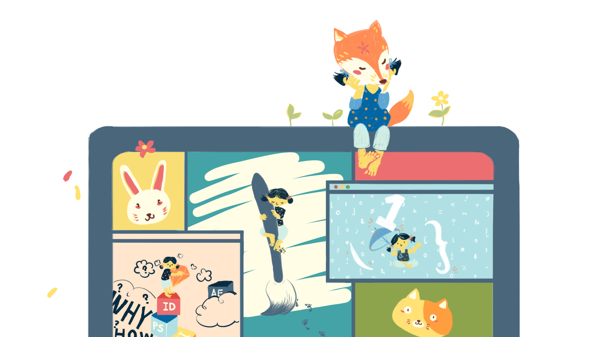

I’ve heard this so many times in the past three months. I hope you’ve heard that a lot as well
because that means, people are helping you.
In 2017, I came to Australia alone from China and studied the
Master of Communication Design at RMIT University.
Besides improving the design skills, I joined many voluntary events and challenges. I also got my first (paid) intern opportunity in Australia from those events.
After two years, I graduated with Distinction.
Then I was chosen to represent the school for Hong Kong Design Week, after that trip, my parents came to visit me for my graduation ceremony.
We traveled a little bit in Australia and I finally got the chance to go back to China in these two years, for a holiday.
However, when I came back to Melbourne in January and thought I was ready to work,
I began to find out that the things become harder than I thought...
This is a personal project that recorded my journey for finding my first (paid) job in the creative industry (in Australia).
Many people do not like talking about this process, even when I ask them directly, most people just use one or two sentences to summarize it.
Yes, these moments are not that shiny, and sometimes very dark.
But you will know, or probably already know that, though some people are very lucky, for most of us, this process contains much more.
Sometimes it is long, so long, too long - If we see this as a game, my mode would definitely be the hard mode, we should admit that.
I feel really grateful that so many people helped me in this journey. I do not know how to pay it back but sharing this with more people.
By the way, I am xyxy and I hope this might help you as well...
